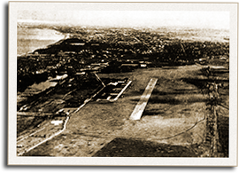

|
j
a v a s c r i p t |
April 13, 1942

Nichols Field ca. 1940
The bombing of Nichols lifted Manila from the depths of gloom. A bank accountant told me, "I hope they don't keep us waiting three months for the next one." A nurse at the PGH said a man hit by shrapnel was pleased for the "souvenir" and wished for a bombing everyday. At the Astoria, a man unfolded a little sketch pinpointing the hits. One bomb landed beside a barrio at the edge of the airfield where the Japanese planes were parked (Lolita watched two planes burn from a block away). One bomb hit a small church nearby. Another hit and burned the left side of the Los Tamaraos' clubhouse, exploding 600 drums of gasoline. (Even today the Japanese were busy evacuating gas and oil stocks from Pasay.) One bomb hit a building housing Japanese officers and burned a row of houses occupied by their troops. The Japanese immediately roped the area off and trucked their dead away. The Tribune condemned the "inhuman" attack on civilians and their properties, and listed casualties of 18 killed and 30 wounded. La Vanguardia even published the names of Filipino casualties. Kunitero Samejima of the propaganda corps resumed the effort to sow hatred between Filipinos and Americans. It now looks like Filipino soldiers will not be released early as they might contradict the propaganda line. Early reports say American POWs are receiving harsh treatment. One Sison saw two truckloads of POWs at a water-stop. Japanese soldiers prodded the POWs with bayonets, ripping their pants and shirts. According to Schaer, four officers told him the Japanese intend to punish the Americans for their mistreatment of Filipinos. |
|
|
|
|